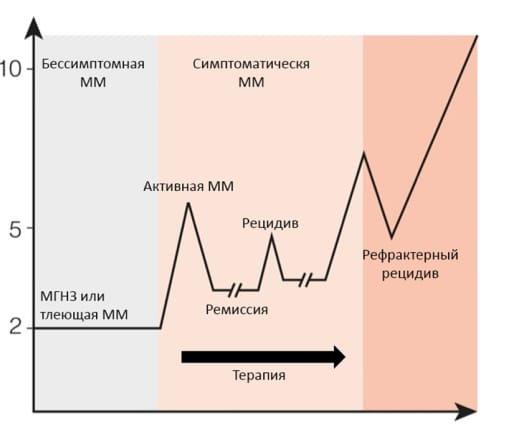

Множественная миелома
Терапия множественной миеломы
В статье Что такое множественная миелома? мы уже разобрали причины и симптомы данного заболевания. В этом материале мы подробнее расскажем о доступных методах терапии этого злокачественного заболевания крови в Российской Федерации.
В настоящее время эксперты говорят о переводе множественной миеломы (ММ) в хроническое заболевание. Это значит, что пациенту важно регулярно контролировать свое состояние: сдавать необходимые анализы и при возникновении новых жалоб сообщать о них лечащему врачу для своевременной корректировки терапии.
Большинство пациентов с множественной миеломой получают несколько видов лечения.
Терапия ММ обычно состоит из нескольких последовательных шагов лечения, так называемых линий терапии.
1 линия терапии (первая «ступень»)
Первая линия терапии множественной миеломы может состоять из нескольких этапов в зависимости от статуса пациента и течения заболевания.
Первый этап, который назначается всем пациентам – индукционная терапия. Ее цель – максимально сократить количество клеток миеломы в вашем костном мозге и добиться ремиссии заболевания.
На 2-м этапе может быть проведена аутологичная трансплантация стволовых клеток* (ауто-ТГСК) в сочетании с высокодозной химиотерапией, целью которой является уничтожение всех миеломных клеток в костном мозге.
Важно помнить, что трансплантацию проводят не всем пациентам. Решение принимает лечащий врач, учитывая такие факторы, как возраст, соматический статус и наличие сопутствующих заболеваний.
Как правило, кандидатами на ауто-ТГСК являются пациенты с впервые выявленной ММ в возрасте до 65 лет, а также пациенты 65−70 лет с хорошим соматическим статусом без тяжелых сопутствующих заболеваний.
3-м этапом первой линии является курс поддерживающей терапии, цель которой – подавление роста миеломных клеток, которые могли остаться после первого этапа лечения. Решение о назначении поддерживающей терапии принимается вашим врачом в каждом случае индивидуально.
*Аутологичная трансплантация стволовых клеток - это процедура замены стволовых клеток, разрушенных, поврежденных во время химиотерапии, вашими собственными, заготовленными у вас заранее. Ваш врач возьмет стволовые клетки из вашего собственного костного мозга или крови, прежде чем вы получите высокодозную химиотерапию, а затем введет их обратно через вену. Пересаженные стволовые клетки «заселяют» костный мозг, размножаются и начинают производить нормальные здоровые клетки крови.
2-ая и последующие линии терапии
Несмотря на современные научные достижения множественная миелома пока остается неизлечимым заболеванием, поэтому рано или поздно наступает период, когда болезнь возвращается и состояние пациента ухудшается. В таком случае говорят о возникновении рецидива.
Пациенту важно соблюдать рекомендации лечащего врача, следить за изменениями в своем состоянии и своевременно сдавать необходимые анализы. Это поможет вовремя обнаружить рецидив и скорректировать терапию.
Рисунок 1. Этапы течения множественной миеломы 4,5
МГНЗ — моноклональная гаммапатия неясного значения.
Лечение рецидивов множественной миеломы в большинстве случаев представляет собой лекарственную терапию.
В настоящее время существует три основных класса противомиеломных препаратов:
- Ингибиторы протеасом
- Иммуномодуляторы
- Моноклональные антитела
Они действуют на болезнь по-разному.
Ингибиторы протеасом блокируют действие особой группы белков (протеасом) в миеломных клетках, что приводит к ее гибели.
Моноклональные антитела представляют собой искусственно созданные антитела, которые могут связаться с белками на поверхности опухолевых клеток и уничтожить их.
Иммуномодуляторы помогают иммунной системе находить и атаковать опухолевые клетки.
Всего в России доступно более 10 ключевых лекарственных препаратов, которые могут применяться в различных комбинациях.**
Лечащий врач подбирает индивидуальную схему лечения для каждого пациента с учетом особенности его заболевания, биологии опухоли, прогностических факторов - как благоприятных, так и неблагоприятных.
Также на каждом из этапов может быть назначена сопроводительная терапия. Цель такой терапии – снизить эффект от возможных нежелательных явлений и смягчить некоторые симптомы заболевания.
**По данным Государственного реестра лекарственных средств на 1 октября 2022 года. URL: https://grls.rosminzdrav.ru/Default.aspx
Литература
- Рамасами Картик, Лониал Сагар. Множественная миелома и плазмоклеточные заболевания. – Практическая медицина, 2018
- Множественная миелома. Симптомы и причины // mayoclinic.org: информационно.-справочный портал клиники Мейо. URL: https://www.mayoclinic.org/diseases-conditions/multiple-myeloma/symptoms-causes/syc-20353378
- SEER incidence and NCHS mortality statistics. Доступно по адресу: http://seer.cancer.gov/statfacts/index.html
- Жизнь с множественной миеломой. // themmrf.org: информационно-справочный портал Фонда исследований множественной миеломы. URL: https://themmrf.org/multiple-myeloma/
VV-MEDMAT-78800
Ноябрь 2022
ООО «Такеда Фармасьютикалс» ул. Усачева, 2, стр. 1, 119048, Москва
Россия
Тел.: (495) 933 5511, факс: (495) 502 1625 www.takeda.com/ru-ru/